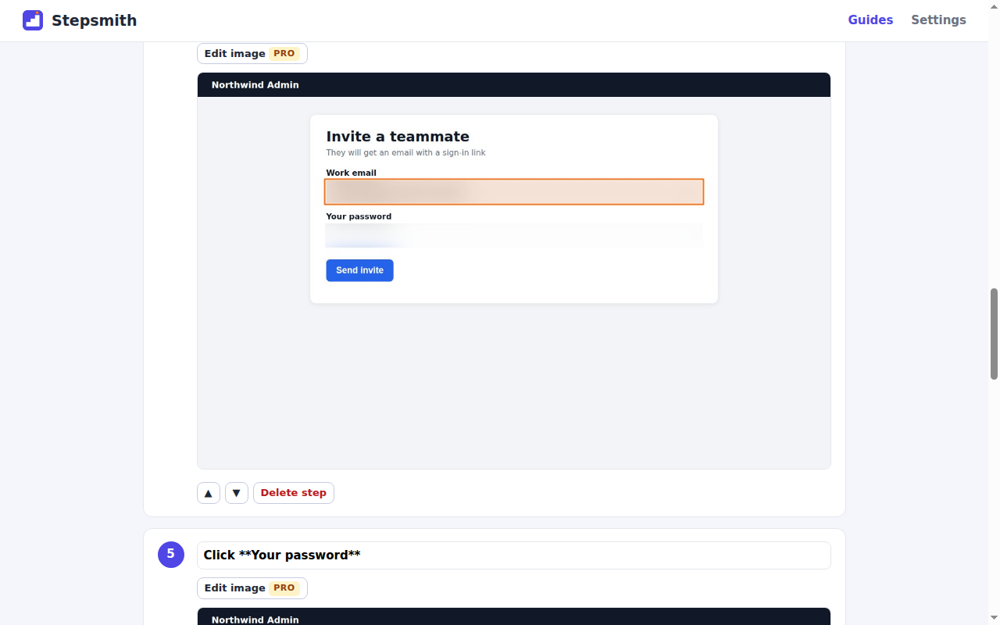
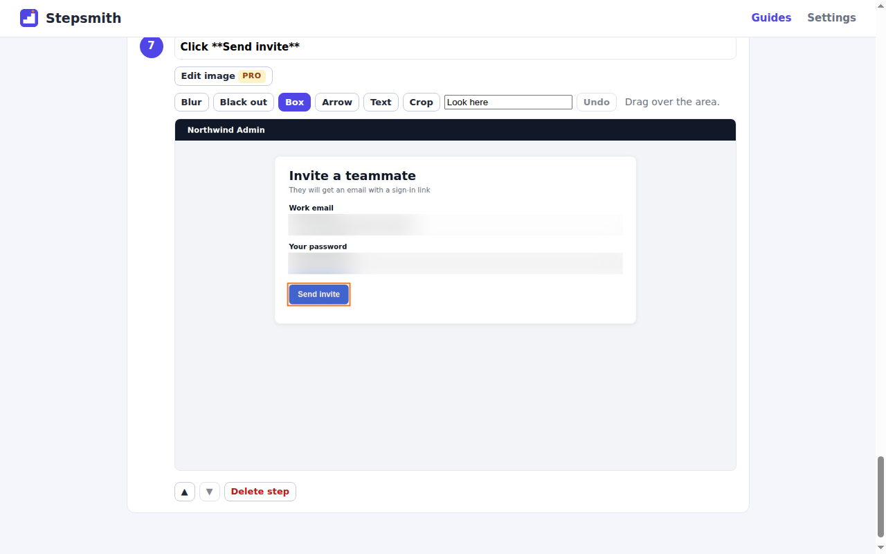

How it works
- Open the website you want to document and click Record this tab.
- Do the task as you normally would. Each click becomes a step with a screenshot, the clicked spot highlighted, and a caption such as "Click Save".
- Press Stop, tidy the captions, reorder or delete steps, and export.
Why Stepsmith
Your guides stay yours
Screenshots and captions are stored in your browser. The free version makes no network requests, so nothing is uploaded and there is no account.
Safe by default
What you type is never saved, only the name of the field. Password, one-time-code and card fields are never read and are blurred in screenshots.
Pay once, if at all
Recording, editing, HTML export and Markdown copy are free. Pro is a one-time unlock, not a monthly seat.
Narrow access
Stepsmith asks for access to websites once, with Chrome's own prompt, the first time you record, and only touches the tab you record.
Free and Pro
Free
- Record across page loads in a tab
- Screenshot per step, with the clicked spot highlighted
- Automatic captions, editable
- Edit, reorder, delete, add text steps
- Unlimited guides, stored on your device
- Export a single self-contained HTML file
- Copy the steps as Markdown
Pro (one-time)
- PDF export, made on your device
- Redact and annotate: blur, black out, box, arrow, text, crop
- Automatic blurring of emails and long numbers
- Your logo, colour and footer on exports
- Markdown export as a .zip with image files
Screenshots


FAQ
Does Stepsmith upload my screenshots?
No. Guides and screenshots live in your browser's local database. The free version makes no network requests. Buying Pro contacts ExtensionPay, and nothing else ever does.
Why does it ask for access to all websites?
To keep recording after a click opens a new page, and to take the screenshots, Chrome needs the permission for the sites you record. Stepsmith asks once, only when you first start recording, and only touches the tab you are recording while you record. If you say no, nothing is recorded.
Does it save what I type?
No. A step like "Type in Email" records only the field's name. Password, one-time-code and card fields are never read and are blurred in screenshots.
What can't it record?
Browser pages (chrome://), the Chrome Web Store and the built-in PDF viewer, and actions inside the browser's own menus. Clicks inside embedded frames are not captured yet.
Why is a step missing its screenshot?
If a click navigates away faster than the screenshot can be read back, Chrome refuses the capture. The step is still recorded; you can add a text note or record that part again.